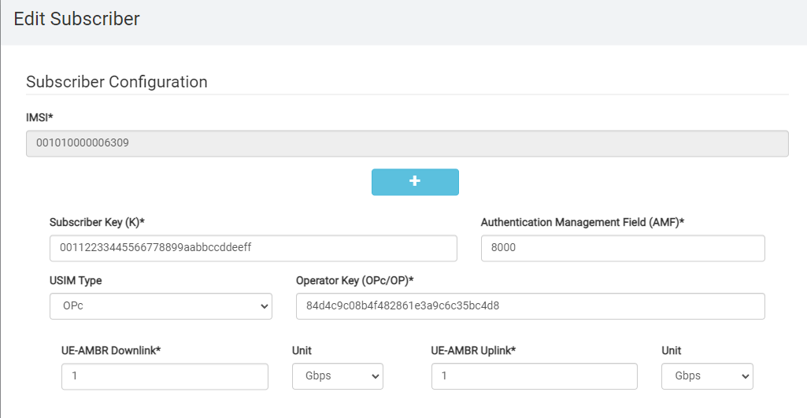
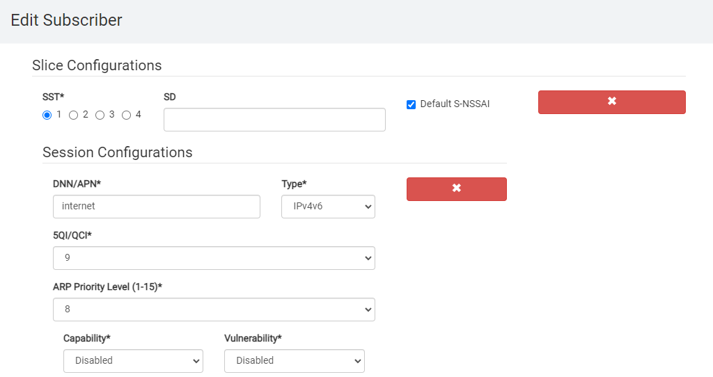
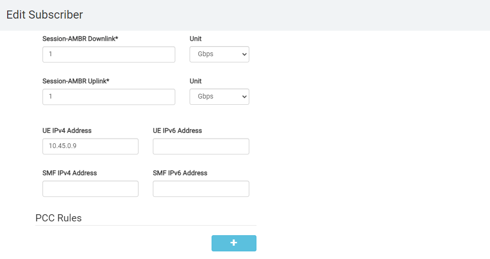

Core Installation¶
In order to have end-to-end connectivity a core network is required. If no core network is available, Open5GS can be installed in a virtual machine on the installation machine. If you already have a core you can skip this chapter.
Create a Network Bridge¶
In order to be able to assign a public IP address to the Virtual Machine, the network connection of the installation machine has to be bridged.
This allows to add the virtual machine to the created bridge.
To create a bridge, replace the network configuration of the installation machine which is assumed to be located in /etc/netplan/00-installer-config.yaml with the configuration below.
You might have to edit this configuration to match your set-up.
network:
ethernets:
$SERVER_INT:
dhcp4: false
:
:
bridges:
br0:
interfaces: [$SERVER_INT]
addresses:
- $SERVER_IP/24
gateway4: $GATEWAY_IP
nameservers:
addresses: [8.8.8.8]
version: 2
Next run the following command to test and apply the new configuration:
sudo netplan try
Make sure to use br0 as the $NODE_INT from now on:
export NODE_INT=br0
Create a Virtual Machine¶
Next you can install the virtual machine that hosts the core. The installation process is outside the scope of this document. Still we share the commandline you can use Below a command line that creates a VM with the correct settings.
IMPORTANT ! the $CORE_SET_CU can only be a comma seperated list.
sudo virt-install --name "$OPEN5GS_VM_NAME" --memory 16768 --vcpus "sockets=1,cores=$CORE_AMOUNT_CU,cpuset=$CORE_SET_CU" --os-type linux --os-variant rhel7.0 --accelerate --disk "/var/lib/libvirt/images/o5gsCORE-ubuntu-20.04.4-live-server-amd64.img,device=disk,size=100,sparse=yes,cache=none,format=qcow2,bus=virtio" --network "source=br0,type=bridge" --vnc --noautoconsole --cdrom "./ubuntu-20.04.4-live-server-amd64.iso" --console pty,target_type=virtio
some notes about this command * --noautoconsole : if you ommit this, a graphical console window will popup. This works only when the remote server can export its graphical UI to your local graphical environment like an X-windows * --console pty,target_type=virtio will make sure you can use
virsh console $CU_VM_NAME
Continue with virt-manager console
Choose all default except for
* Fill in the hostname $OPEN5GS_HOSTNAME
* Fill in the static ip of $CORE_IP
* select [ x ] openSsh
VM installation takes 5 minutes
Make sure to create a bridged network for the virtual machine and assign a fixed IP address ($CORE_IP) in the same subnet as $NODE_IP to it.
Copy the .var file over to the core VM.
scp $HOME/.vars $USER@$CORE_IP:.vars
ssh $USER@$CORE_IP "echo . .vars >> .profile"
ssh into the CORE VM.
ssh $USER@$CORE_IP
Install Open5GS¶
Please refer to the Open5GS website for information on how to install and configure the Open5GS core network on the virtual machine.
NOTE : don't forget the ip forwarding section. If forgotten the UE connects with an exclemation mark in the triangle and has no internet connectivity.
Configure Open5GS¶
The default configuration of Open5GS can mostly be used as-is. There are a couple of modifications that have to be made to its configuration:
Edit /etc/open5gs/amf.yaml and set the NGAP listen address to the public address of the virtual machine:
amf:
ngap:
- addr: $CORE_IP
Change the plmn_id: everywhere in the amf.yaml file to the one of your setup.
Edit /etc/open5gs/upf.yaml and set the GTP-U listen address to the public address of the virtual machine:
upf:
gtpu:
- addr: $CORE_IP
Restart the AMF and UPF:
sudo systemctl restart open5gs-amfd
sudo systemctl restart open5gs-upfd
open5gs GUI¶
To be able to reach the GUI from any IP address add these lines
[Service]
Environment=HOSTNAME=0.0.0.0
Environment=PORT=3000
to the file /etc/systemd/system/multi-user.target.wants/open5gs-webui.service under de [Service] section.
and restart the service
systemctl daemon-reload
systemctl restart open5gs-webui.service
netstat -ano | grep 3000
#tcp 0 0 0.0.0.0:3000 0.0.0.0:* LISTEN off (0.00/0/0)
Provision a UE¶
This can be done through command line
open5gs-dbctl add 001010000006309 00112233445566778899aabbccddeeff 84d4c9c08b4f482861e3a9c6c35bc4d8 internet
or webgui
  
- use static ip address which you can map to the imsi. This makes debugging traffic much easier when using multiple UE's.
eg: imsi 235880000009834 gets ip address 10.0.0.34
Verify if open5gs is functional¶
open5gs listens on ngap interface
netstat -ano | grep 38412
# sctp 10.55.7.104:38412 LISTEN
5g configuration
grep -e 10.55.7 -e m[cn]c /etc/open5gs/* | egrep -v :\s*#
#/etc/open5gs/amf.yaml: - addr: 10.55.7.104
#/etc/open5gs/amf.yaml: mcc: 001
#/etc/open5gs/amf.yaml: mnc: 01
#/etc/open5gs/amf.yaml: mcc: 001
#/etc/open5gs/amf.yaml: mnc: 01
#/etc/open5gs/amf.yaml: mcc: 001
#/etc/open5gs/amf.yaml: mnc: 01
#/etc/open5gs/upf.yaml: - addr: 10.55.7.104
Some scripts one often uses¶
restart¶
at > restartcore.sh << EOF
sudo systemctl restart open5gs-mmed
sudo systemctl restart open5gs-sgwcd
sudo systemctl restart open5gs-smfd
sudo systemctl restart open5gs-amfd
sudo systemctl restart open5gs-sgwud
sudo systemctl restart open5gs-upfd
sudo systemctl restart open5gs-hssd
sudo systemctl restart open5gs-pcrfd
sudo systemctl restart open5gs-nrfd
sudo systemctl restart open5gs-ausfd
sudo systemctl restart open5gs-udmd
sudo systemctl restart open5gs-pcfd
sudo systemctl restart open5gs-udrd
sudo systemctl restart open5gs-webui
EOF
version¶
cat > versioncore.sh << EOF
set -x
open5gs-mmed -v
open5gs-sgwcd -v
open5gs-smfd -v
open5gs-amfd -v
open5gs-sgwud -v
open5gs-upfd -v
open5gs-hssd -v
open5gs-pcrfd -v
open5gs-nrfd -v
open5gs-ausfd -v
open5gs-udmd -v
open5gs-pcfd -v
open5gs-udrd -v
open5gs-webui -v
set +x
EOF